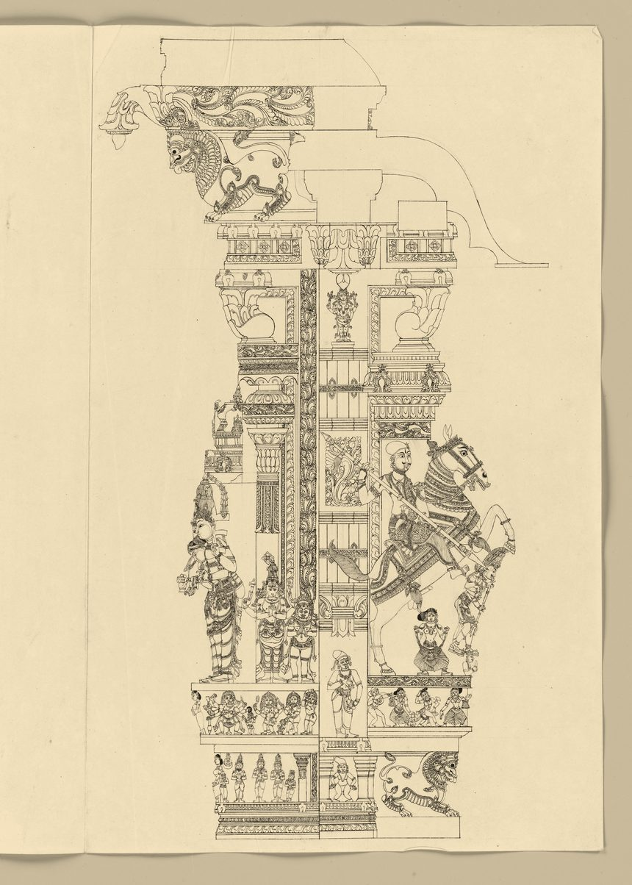
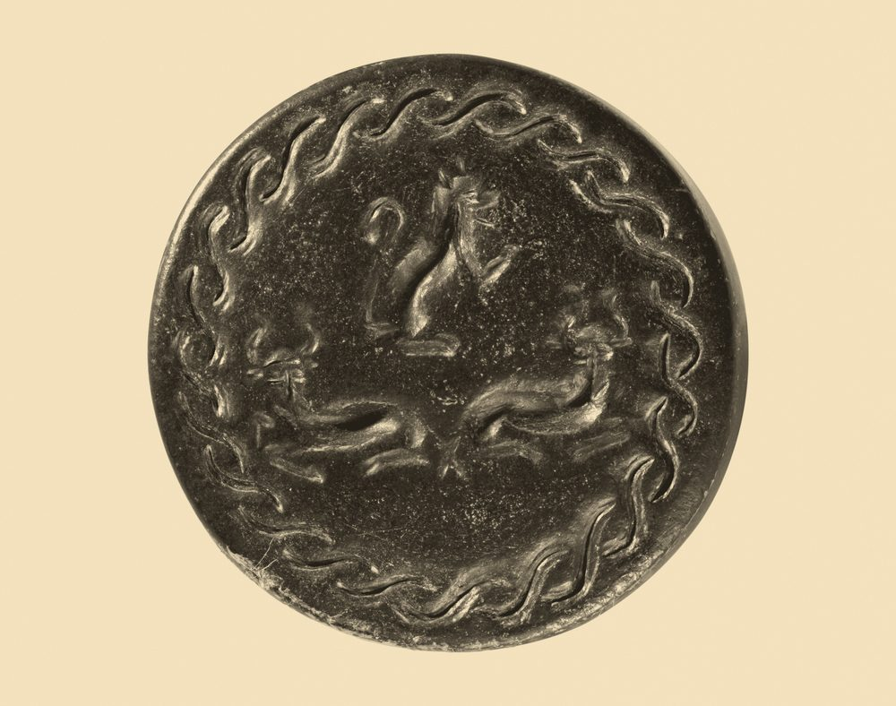
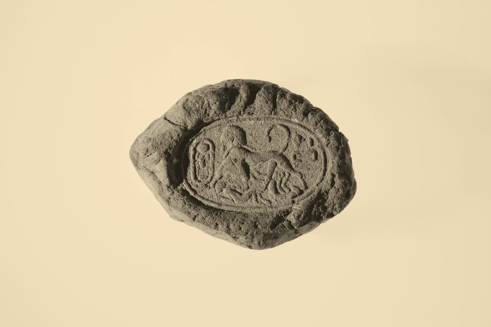
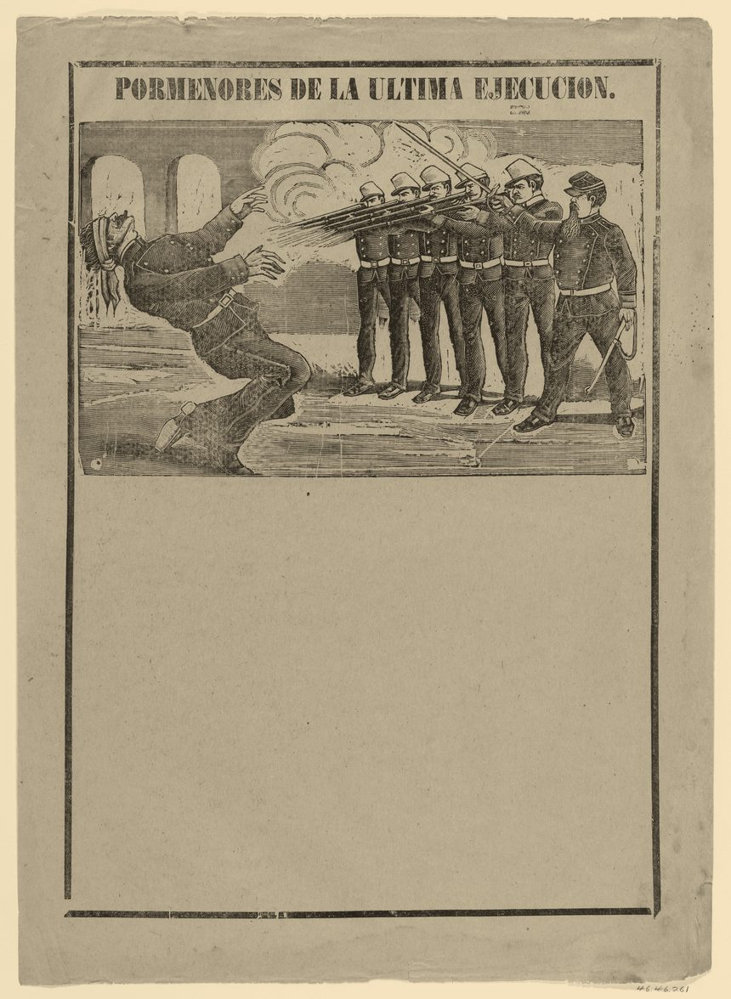

条款
第一条事由0.4mm
本函就「城南契约档案之核验」一事，向贵科调取原件留存的骑缝印样，用以比对存卷副本的压印深度与压印次序。核验以纸面形变为准，不以墨色为准。
第二条依据0.4mm
依《文书档案核验规程》第十一条、第十九条办理；涉及一九四九年以前之卷宗，另依《旧档调阅办法》办理。
第三条检送0.4mm
检送一九八七年至一九九三年骑缝印样共十四件，分编为附件一至附件四；件数、状态与存放位置见附件目录。
第四条期限0.4mm
自签发之日起七个工作日内答复。逾期未复的，本函连同附件自动转呈复核科，并记入年度核验台账。
第五条方式0.4mm
回函一律用棉纸盲压件，不落墨、不着色。影印件、传真件与电子副本一律不予受理，因上述三种方式无法留存压印深度。
第六条责任0.4mm
本函由徵信核验科主稿，会签档案修复室；未经会签不得对外，不得拆分调阅，不得据以复制原件。
第七条附记0.4mm
本函一式两份，正本存卷，副本送复核科备查。回函请于骑缝处加盖原章，并在末行末字处保留压印机收力的浅槽。
附件目录
| 编号 | 内容 | 件数 | 实测压深 | 状态 |
|---|---|---|---|---|
| 附件一 | 一九八七年骑缝印样 | 3 | 0.41mm | 完好 |
| 附件二 | 一九九〇年骑缝印样 | 4 | 0.38mm | 边角起毛 |
| 附件三 | 一九九二年骑缝印样 | 4 | 0.43mm | 完好 |
| 附件四 | 一九九三年骑缝印样 | 3 | 0.26mm | 末行收力不足 |
| 合计 | 四个年度 | 14 | 均值 0.37mm | 待核验 |
附注：附件原件一律不外借，调阅须由复核科在阅览室当面点交，点交时按上表「实测压深」一栏逐件复测；低于 0.30mm 的一律退回重压。
工艺参照件（原件翻拍）
四件参照物一律按 6 号字段第 4 条处理：实物翻拍或 45° 侧光翻拍以留下真实阴影，灰度化后只映射纸色与墨色两个色阶，颗粒不叠加，该层改用纸纤维噪声。它们只作工艺比对，不构成卷宗内容。



